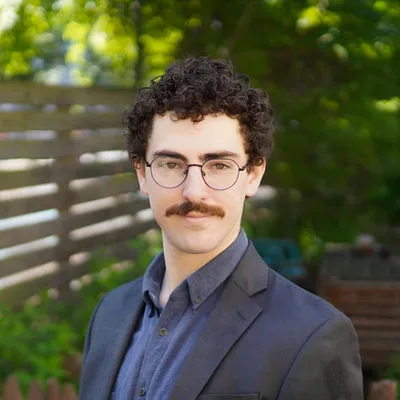

Public Forum Debate

PUBLIC FORUM DEBATE
From beginners to national champions—master the art of persuasion with Ivy League coaches and award-winning strategies.
Elite Training
Public Forum Debate
Through our partners, GE Elite Academy, based in Shanghai, we offer year-round Online Public Forum programs for middle and high school students.
Our curriculum blends rigorous training in case writing, refutation, and strategy, tailored for all levels from beginner to advanced.
Small group and private classes are taught by world-class coaches to prepare students for success in global competitions.
- Ivy League Mentorship
- Advanced Strategy Kits

Our Team
Dedication. Expertise. Passion.

Head Coach
Archie Stapleton
Archie Stapleton holds an MTS from Harvard Divinity School...
Archie has spent a decade coaching debate and philosophy internationally, taking students to the break rounds at Stanford, Harvard, Yale and Georgetown. He runs MPI Education, whose programs include the Ethics Olympiads, the TKEthics Invitationals and the Global AI Debates.
Head Coach
Zach Bloom
Zach completed his Masters in Philosophy at UBC...
He received the Canada Graduate Scholarship-Master's Award for his research in mathematical ontology. For over five years, Zach has professionally coached debate, earning major victories for his students across North America and China.

Coach
Fiona Shen
Fiona studies Economics and Public Affairs at Brown University...
She has over 4 years of experience coaching debate. Representing Brown, she qualified for the World University Debate Championships.
Coach
Lillian Xue
Lillian studies Psychology and Data Science at Northwestern University...
She is an active member of Northwestern's Parliamentary Debate Union, has over three years of coaching experience leading students to elimination rounds at international tournaments, and has broken at the Harvard and Georgetown Invitationals.

Coach
Nikki Zheng
Nikki studies political science and economics at Columbia University...
Over six years of competitive Public Forum, she ranked in the top 1% of debaters internationally, was the top-ranked PF debater in Canada, and placed at Stanford, Harvard, Princeton and the Tournament of Champions. She coaches in both English and Mandarin.